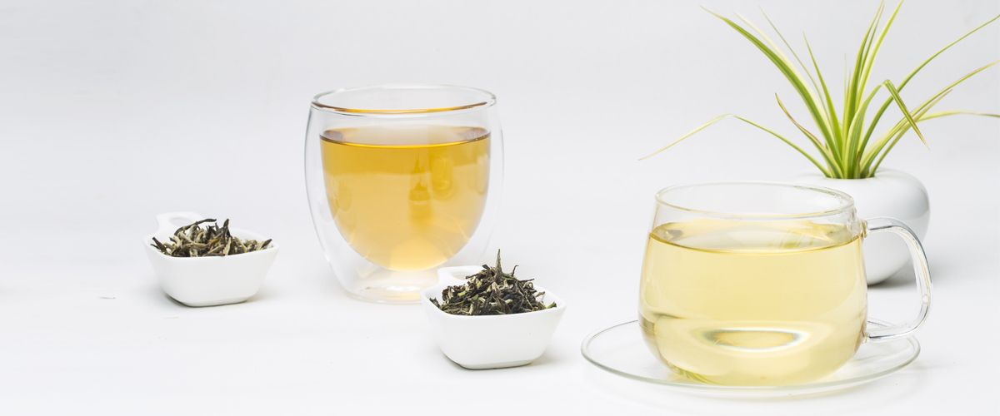

Sip Herbals: Herbal Coffee & Dandelion Tea
Organic Chicory & Dandelion Blends
Experience a caffeine-free, eco-friendly coffee alternative crafted to nourish your body and support your wellness journey.
Welcome to Sip Herbals
At Sip Herbals, we specialize in herbal coffee alternatives made with natural ingredients like dandelion and chicory roots. Say goodbye to caffeine jitters and hello to a nourishing morning ritual. At Sip Herbals, we’re committed to eco-friendly practices that protect our planet. Coffee production often has a significant environmental footprint due to intensive farming practices, high water use, and carbon emissions. By choosing a plant-based, herbal coffee alternative like Faux Joe, you’re supporting a more sustainable option that helps reduce your impact on the environment. With our focus on sustainability, we’re proud to bring you a product that is as kind to the planet as it is to you.
Benefits of Herbal Coffee
- Caffeine-free and soothing to the digestive system
- Eco-friendly and sustainable production
- Rich in antioxidants and prebiotics
Featured Product: Green tea
Green herbals combines the richness of coffee with the health benefits of herbal ingredients like dandelion and chicory roots. Perfect for anyone seeking a flavorful, caffeine-free alternative.
